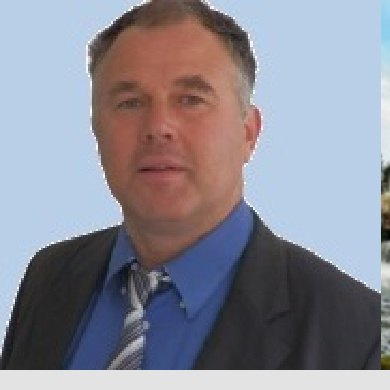

Une trajectoire au service des ouvrages hydrauliques

Denis Bouzon — fondateur du cabinet Eau-Energie
Eau-Energie est né d’un parcours technique, de terrain et de projet. La formation initiale en génie électrique et informatique industrielle, complétée par un master d’ingénieur d’affaires, a d’abord conduit aux réseaux, aux infrastructures, aux équipements industriels et à la coordination de chantiers.
Ce chemin s’est ensuite déplacé vers l’eau, les moulins, les seuils, les canaux et les petites centrales. L’hydroélectricité y apparaît comme une rencontre entre une histoire locale, une géologie, une hydraulique réelle, une continuité écologique à respecter et un cadre réglementaire à maîtriser.
Du réseau à la rivière
1996–2009. Après une formation universitaire dans le domaine de la physique fondamentale et du génie électrique, Denis Bouzon a travaillé comme salarié dans les réseaux, les télécommunications, puis comme chargé d’affaires dans le domaine énergétique et industriel. Cette première période lui a donné une culture technique de terrain : lecture des plans, infrastructures, raccordements, contraintes électriques, suivi de chantier et coordination opérationnelle.
2008–2009. Industrie, conduite d’affaires, installations techniques, relation client et coordination opérationnelle : passer du diagnostic au chantier, puis du chantier à la réception.
2011–2022. Agence Nature & Hydroélectricité : conception, vente et suivi de projets hydroélectriques, appels d’offres, environnement, continuité écologique et mise en conformité.
Depuis 2022. Cabinet Eau-Energie à Pau : dossiers Loi sur l’eau, droits d’eau, rénovation d’ouvrages, études hydrauliques, valorisation hydroélectrique et sécurisation réglementaire des sites.
Une lecture complète : histoire, milieu, technique, règlement
Un ouvrage hydraulique n’est jamais seulement un seuil en travers d’un cours d’eau. C’est un objet historique, foncier, géologique, hydraulique, écologique, énergétique et administratif. Avant de parler turbine, puissance ou productible, il faut comprendre l’ouvrage : son origine, sa consistance, ses usages, ses limites, son inscription dans le lit de la rivière et dans les textes qui le gouvernent.
Eau-Energie travaille donc à partir du réel : plans, cadastre, nivellements, profils, débit, chute, accès, propriété, servitudes, état des maçonneries, continuité écologique, présence d’espèces protégées, prescriptions existantes et procédure applicable. L’objectif est de produire une analyse utile, lisible et défendable.
Position de méthode : remettre les ouvrages dans leur histoire, leur rivière et leur cadre juridique avant de proposer une solution technique. Une bonne étude hydroélectrique ne se limite pas au calcul de productible ; elle sécurise d’abord la réalité de l’ouvrage.
Domaines d’intervention
Eau-Energie intervient sur les ouvrages hydrauliques existants : moulins, seuils, prises d’eau, canaux d’amenée, canaux de fuite, anciennes usines hydrauliques, petites centrales hydroélectriques et dispositifs de franchissement piscicole.
Les missions croisent l’hydraulique, l’hydrologie, le droit d’eau, le foncier, l’environnement aquatique et le cadre réglementaire. L’objectif est de produire des analyses directement utilisables pour décider, sécuriser un site, dialoguer avec l’administration ou préparer un projet.
Titres, cadastre, usages, canaux, consistance légale, règlement d’eau, servitudes, accès et propriété.
Géologie locale, profils, pente, chute, débits, maçonneries, vannages, continuité hydraulique et contraintes de site.
Calcul de chute nette, choix turbine, raccordement, productible, recettes, rénovation et mise en conformité.
Loi sur l’eau, IOTA, débit réservé, continuité écologique, prescriptions, échanges avec les services instructeurs.
Hydroélectricité
La page hydroélectricité présente la méthodologie Eau-Energie pour qualifier un droit d’eau, analyser l’hydrologie, calculer la chute nette, choisir un équipement turbine, simuler le productible et évaluer les recettes prévisionnelles.
Foncier hydraulique
La page foncier traite des acquisitions et cessions de moulins avec droit d’eau : titres, cadastre, canaux, servitudes, accès, propriété des ouvrages et risques avant compromis.
Environnement et réglementation
Les pages environnement, hydraulique et réglementaire présentent les approches appliquées aux milieux aquatiques, aux débits, aux procédures Loi sur l’eau, aux classements de cours d’eau et aux échanges avec les services instructeurs.
Publications techniques
Les cahiers techniques Eau-Energie rassemblent des notes et analyses publiées en accès libre sur l’hydroélectricité, les prises d’eau, la continuité écologique, le Desman des Pyrénées et la réglementation des ouvrages hydrauliques.